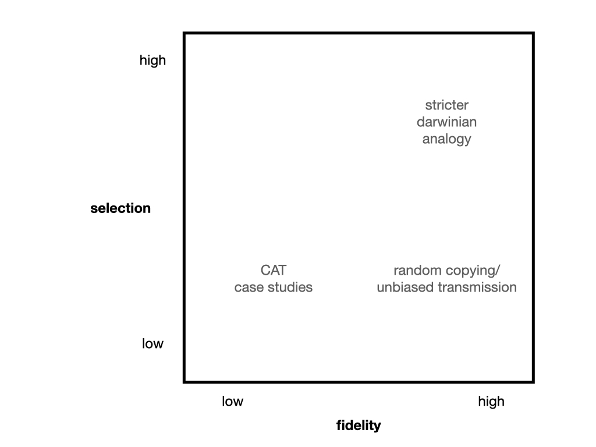

What is a carbonara? A recent YouGov survey suggests that the majority of Italians find unacceptable to include cream in a carbonara sauce. But what about meat? Does it have to be guanciale or smoked pancetta is alright? And the cheese? I often use parmigiano instead of pecorino, and I do not feel much anxious about this modification. The cultural trait “carbonara” has fuzzy bundaries, still some similarity between various instantiations needs to exist to refer to them as “carbonara”. (We prepare, at home, a pasta with pancetta, cream, and onion soffritto: it is delicious, but we call it “french carbonara”, i.e., it is another, different, cultural trait.)
This property is fundamental for studying culture. A prerequisite for culture to exist is that there is a sufficient number of instantiations that are similar enough to justify the existence of “cultural traits” (another one is that there is some role of social transmission of information in how these instantiations are brough about). How does this (relative) similarity is maintained? In cultural evolution, the usual answer is: faithful copying and selection. According to this view, we have particular abilities that make us able to copy with precision from others, and we use a suite of heuristics (often referred to as social learning strategies) that make us choose preferentially some individuals to copy from, or some traits. This view has been very influential and productive, and for good reasons! Humans are able to copy others faithfully and humans do use heuristics that select preferentially some traits to copy with respect to others. In addition, this description has the great appeal of making the processes of cultural transmission and evolution broadly similar to the processes of genetic transmission and evolution, with all the interesting advantages coming from here.
Other researchers think that similarity among different instantiations of the same cultural traits is due also to other reasons, and that these reasons are also important. We do not need to bring up faithful copying to explain why percussive tools have similar features, masks are used in rituals, or there is a division of labor between sexes. (Anthropologists love to show how in the society X there are not masks, which is sometimes interesting but does not change the general principle.) Even without faithful copying, starting from some degree of social information, cultural traits can be reconstructed similarly, in a process sometimes dubbed convergent transformation. If faces are remarkable, attention-grabbing, and memorable visual stimuli, masks will come to exist with high likelihood.
Anyway, this is old story, and everybody agree - I think - that different mechanisms can bring about similarity among cultural traits (and thus: culture), and that there is not a real contrast between explanations that emphasise copying or explanations that emphasise convergent transformation (I wrote about this here and here). What I would like to ask is: and so? Is there any interesting direction that we can go from here? In a recent paper with Mathieu Charbonneau, Helena Miton, and Thom Scott-Phillips, we tried to model both processes: a process of faithful copying and selection and one of convergent transformation without selection. The model first shows, probably not surprisingly, that both processes can bring about similarity - or stability (I tend to think to similarity as a relationship among traits, and stability as a population-level property, but the latter is consequence of the former).
There are two others uses of the model, possibly with more consequences. The first is about what happens when convergent transformation and faithful copying act together. If selection is at work, and goes in a different direction with respect to convergent transformation (think a ban against masks) the final outcomes depends on the relative strength of selection and convergent transformation. But: what does it happen if selection is not at work, and copying is faithful but random? One could suppose that random copying would “lock” cultural traits in a different configuration with respect to the one of convergent transformation, but this is not the case. As convergent transformation is the only directional process at work, even if there is a strong unbalance of forces (copying is very faithful and convergent transformation is weak), cultural stability is reached where convergent transformation alone would push. This suggests to me - but we did not model it - that if various processes of cultural selections (think the social learning strategies mentioned above), strong but with variable directions, act together with convergent transformation, we should still be able to observe the effect of the latter, no matter how weak it is.
Second, a process based on faithful copying plus selection and a process based on convergent transformation produce the same final state: a stable culture. Are there ways to distinguish the two? Our model suggests two ways: in a process based on faithful copying plus selection, the distance between the copied trait and the reproduced trait (how different are they?) is constant, as it is independent from the actual features of the trait. In a process based on convergent transformation, we should instead expect that this distance is larger for traits that are far from the convergence point, and smaller for traits that are close to it. For an observer, it looks like we are in some circumstances very good at copying, but in fact it just happens we are closer to the convergence point.
The second way to distinguish the two processes concerns the effect of population size. The relationship between demography and cultural evolution is a huge topic and I do not want to say much about it here, but only that there are some reasons why cultural processes based o convergent transformation could be less sensitive to demographic effects. You can read more in our paper, or in this modelling paper that reached compatible conclusions. Some empirical results seem also to suggest a weaker influence of population size on cultural evolution in cultural domain in which convergent transformation may be important.
To conclude, I believe it is possible, speculatively, to go further. One can map various cultural domains in a bi-dimensional continuum of fidelity and selection (see the figure below).

All of the “final products” look like (more or less) stable cultures, but they are reached in different ways, and they may have different features. The top-right corner (high fidelity and selection) concerns cultural domains usually studied in cultural evolution, where the analogy with biological evolution is robust. On the opposite, the bottom-left corner is about cultural domains where convergent reconstruction is more important, that we explored in our model, and that are often the focus of Cultural Attraction Theory (CAT) inspired research. The bottom-right corner (high fidelity, but no, or low selection) is in fact what studies on random copying in cultural evolution have scrutinized. Finally, I was uncertain about the top-left corner (selection but low fidelity): some suggestions concerned technical skills or scientific theories that are very hard to acquire or, more generally, processes with high task-difficulty, with teaching from experts to novices involved. While this is just a sketch, I wonder whether could be used to explain some differences among cultural domains (demographic effects, like in the case above, but also others, for example opportunities for cumulative cultural evolution?) or to make sense of cultural changes (is the diffusion of digital media moving some cultural domains from the left to the right of the space?). As they say, more research is needed.
P.s.: I am not sure why I started this post with a carbonara. But carbonara is good. And you should not put cream, but patiently learn how to do a “saucy” sauce with eggs: lot of convergent transformation involved.